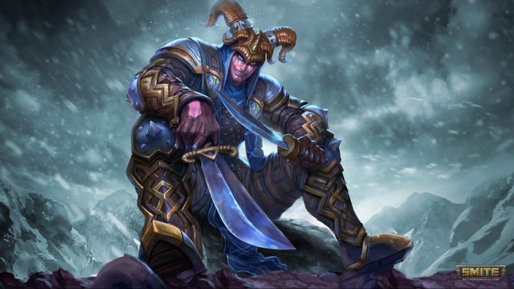

Loki: El Maestro del Engaño

Loki es el asesino por excelencia. Su juego se basa en el sigilo, la confusión y la capacidad de eliminar objetivos clave en cuestión de segundos.
1. El Arte de la Invisibilidad
Desvanecerse es tu principal herramienta de supervivencia. Al activarla, eres inmune a las ralentizaciones. Úsala para rodear la visión enemiga.
2. Combo de Asesinato
- Activa Desvanecerse para acercarte.
- Coloca Visión Agonizante para confundir.
- Usa Puñalada por la Espalda (daño adicional por la espalda).
- Finaliza con Ráfaga de Puñaladas.
3. Ultimate: Asesinato
Loki se teletransporta y aturde al enemigo. Tip 2026: Úsala también para escapar a través de paredes si la situación se complica.
4. Mentalidad de Cazador
No inicies las peleas. Espera a que el enemigo gaste su control de masas. Cuando el Mago o Tirador estén solos, entra, elimina y desaparece.